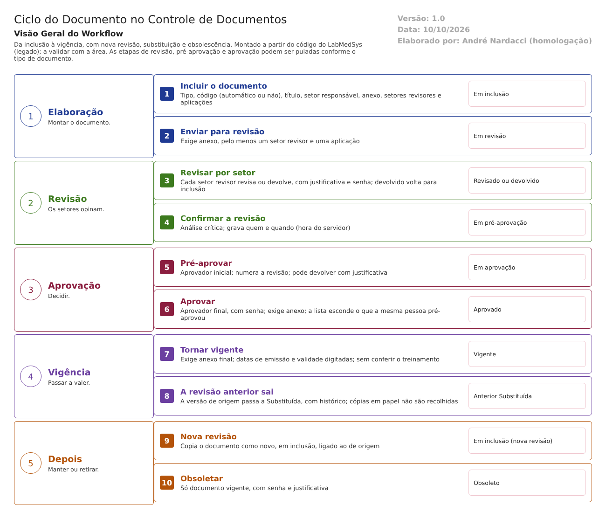

Objetivo
Este documento descreve o fluxo principal do Controle de Documentos no LabMedSys: o ciclo do documento. O documento é incluído, revisado pelos setores, pré-aprovado, aprovado e posto em vigor. Depois pode ganhar uma nova revisão, que substitui a anterior, ou ser obsoletado. É o fluxo que garante que só a versão aprovada e vigente de um procedimento esteja em uso (RDC 658/2022, arts. 119 e 121).
Foi montado a partir do código do sistema legado. O que depende da prática da área está marcado como a validar. Os casos de teste estão no fim.
Escopo
- Documento: inclusão, envio para revisão, exclusão em inclusão.
- Revisão Documento: revisão e devolução por setor; confirmação da revisão (análise crítica).
- Pré-Aprovação Documento e Aprovação Documento, com devolução.
- Vigência de Documento: tornar vigente e substituir a revisão anterior.
- Nova Revisão de Documento.
- Obsolescência de Documento.
- Histórico do documento.
Fora do escopo: Controle de Cópias, Documento Externo, Documento Legado, Tipo de Documento, Arquivos e Modelos. Terão fluxos próprios. O Tipo de Documento entra aqui só no que define o fluxo (RN005).
Nomes das telas: como aparecem no menu ou no alto de cada tela. Os caminhos de código ficam só nas regras e são relativos a 6.controle_documento/app/. Para encurtar: UI/ = HSolutions.ControleDoc.UI/, App/ = HSolutions.ControleDoc.Application/, Doc = UI/Areas/Documento/Controllers/DocController.cs, Serv = App/Services/DocumentoAppService.cs.
Visão geral do processo

O autor inclui o documento: tipo, código, título, setor responsável e o arquivo (anexo). Indica também os setores revisores e as aplicações. Cada setor revisor revisa ou devolve, com justificativa. Depois, a revisão é confirmada (a análise crítica).
Seguem a pré-aprovação (aprovador inicial) e a aprovação (aprovador final). Em cada uma é possível devolver, com justificativa. Aprovado, o documento é posto em vigor, com o anexo final e as datas de emissão e validade. Se for uma nova revisão, a versão anterior passa a Substituída.
Um documento vigente pode ganhar uma nova revisão, que recomeça o ciclo em inclusão, ou ser obsoletado. As decisões pedem usuário e senha, e cada passo grava o histórico: ação, justificativa e quem assinou.
Situações do documento (HSolutions.ControleDoc.Domain/Enumerators/SituacaoDocumentoEnum.cs): Em inclusão, Em revisão, Em pré-aprovação, Em aprovação, Aprovado, Vigente, Cancelado, Substituído, Obsoleto e Excluído.
Descrição funcional das etapas
Inclusão
Regras de negócio
- RN001 – O documento nasce Em inclusão (
Doc:104-121). - RN002 – Para seguir para a revisão, o documento precisa de anexo, de pelo menos um setor revisor e de pelo menos uma aplicação. Mensagens: "Anexo pendente!", "Adicione, pelo menos, um Setor Revisor!", "Adicione, pelo menos, uma Aplicação!" (
Doc:2582-2597). - RN003 – Exclusão só Em inclusão ("O documento não pode ser excluído!"), com justificativa. O documento passa a Excluído e não é apagado do banco (
Doc:345-370). - RN004 – A criação grava no histórico "CRIAÇÃO DO DOCUMENTO", com justificativa e assinante (
Doc:2795).
Telas do sistema
| Módulo | Tela | Finalidade |
|---|---|---|
| Controle de Documentos | Documento | Incluir, consultar, excluir em inclusão e enviar para revisão |
Revisão
Regras de negócio
- RN005 – O fluxo depende do tipo de documento. A próxima situação vem da configuração do tipo (
TBL_TIPO_DOCUMENTO_SITUACAO,App/Services/TipoDocumentoAppService.cs:58-75). Sem configuração, vale a sequência padrão: revisão → pré-aprovação → aprovação. A validar: quais tipos pulam etapas. Um tipo pode, por configuração, pular a aprovação. - RN006 – Cada setor revisor revisa ou devolve, com justificativa. A ação é gravada no histórico como "REVISADO" ou "DEVOLVIDO". O documento devolvido volta para Em inclusão (
Doc:1485-1593). - RN007 – Confirmar a revisão (análise crítica) exige anexo. Grava quem confirmou e a data do servidor (
Serv:1036-1062).
Telas do sistema
| Módulo | Tela | Finalidade |
|---|---|---|
| Controle de Documentos | Revisão Documento | Revisar ou devolver por setor; confirmar a revisão |
Pré-aprovação e aprovação
Regras de negócio
- RN008 – A pré-aprovação só vale Em pré-aprovação ("A situação do documento não permite pré-aprovação!"). Ela grava o aprovador inicial e a data do servidor. Numa nova revisão, soma 1 ao número da revisão (
Serv:765-812). - RN009 – A aprovação só vale Em aprovação ("A situação do documento não permite aprovação!") e exige anexo. Grava o aprovador final e a data do servidor (
Serv:849-884). - RN010 – Devolver na pré-aprovação ou na aprovação pede justificativa e grava no histórico ("DEVOLVIDO PRÉ-APROVAÇÃO", "DEVOLVIDO APROVAÇÃO") (
Doc:1690-1725, 1893-1928). - RN011 – Quem pré-aprovou não vê o documento na lista de aprovação (
UI/Areas/Documento/Model/DocAprovacaoIndexResultadoModel.cs:89-93). Essa é a única separação entre o aprovador inicial e o final, e ela está só na lista: a gravação da aprovação não confere quem pré-aprovou. - RN012 – As decisões pedem usuário e senha (
Doc:2550-2554). Quem pode decidir e como a senha conferida se liga à gravação ficam para a etapa de permissões.
Telas do sistema
| Módulo | Tela | Finalidade |
|---|---|---|
| Controle de Documentos | Pré-Aprovação Documento | Pré-aprovar ou devolver |
| Controle de Documentos | Aprovação Documento | Aprovar ou devolver |
| Controle de Documentos | Aprovação de Documentos (Documento Aprovação) | Lista e aprovação pela tela de aprovação |
Vigência
Regras de negócio
- RN013 – Tornar vigente só vale para documento Aprovado ("A situação do documento não permite tornar vigente!"). Exige anexo final ("É necessário informar um anexo final.") e as datas de emissão e validade, com a validade posterior à emissão. As duas datas são digitadas. Grava quem tornou vigente (
Serv:921-1000). - RN014 – Na vigência de uma nova revisão, a versão de origem passa a Substituída, com histórico "SUBSTITUÍDO" (
Serv:935-950;Doc:2736-2765). - RN015 – A conferência do treinamento antes da vigência existe no código, mas está desligada (comentada) (
Serv:975-978). O documento entra em vigor mesmo quando o tipo exige treinamento. - RN016 – Ordem das conferências: a versão anterior é marcada como Substituída antes de conferir se a nova pode entrar em vigor (
Serv:935-950antes deServ:969-971). Inferência, a confirmar no teste: se a nova for recusada, a anterior pode ficar Substituída sem nenhuma vigente. - RN017 – A vigência está programada em dois lugares, no controlador (
Doc:2736-2765) e no serviço (Serv:921-1000), com regras que podem divergir. Código repetido.
Telas do sistema
| Módulo | Tela | Finalidade |
|---|---|---|
| Controle de Documentos | Vigência de Documento | Tornar vigente ou devolver |
| Controle de Documentos | Vigência de Documentos (Documento Aprovação) | Vigência pela tela de aprovação |
Nova revisão e obsolescência
Regras de negócio
- RN018 – A nova revisão cria um documento novo Em inclusão, ligado ao de origem, com os dados copiados. Ela recomeça o ciclo (
Doc:453-545). A validar: se pode partir de um documento que não esteja vigente, porque o código não mostra essa conferência. - RN019 – A obsolescência só vale para documento Vigente e pede usuário, senha e justificativa. O documento passa a Obsoleto (
UI/Areas/Documento/Controllers/DocObsolescenciaController.cs:176, 285, 447). - RN020 – Os outros módulos só recebem documentos vigentes pela API (
UI/Api/DocumentoApiController.cs:35, 72).
Telas do sistema
| Módulo | Tela | Finalidade |
|---|---|---|
| Controle de Documentos | Nova Revisão de Documento | Abrir a nova revisão de um documento |
| Controle de Documentos | Obsolescência de Documento | Retirar um documento de uso |
Histórico
Regras de negócio
- RN021 – Cada passo grava no histórico do documento: ação, justificativa, responsável, setor, data e assinante (
Serv:1157;HSolutions.ControleDoc.Domain/Entities/DocumentoHistorico.cs:9-21). Há relatório do histórico (Doc:1145). - RN022 – As tabelas desse histórico não estão no projeto de banco (
00-reconhecimento.md, seção 4). Perguntar ao DBA se existem no ambiente.
Telas do sistema
| Módulo | Tela | Finalidade |
|---|---|---|
| Controle de Documentos | Documento (histórico) | Consultar e imprimir o histórico |
Pontos de atenção
1. A separação entre quem pré-aprova e quem aprova está só na lista. Quem pré-aprovou não vê o documento na lista de aprovação, mas a gravação não confere (RN011). A confirmar no teste.
2. Um tipo de documento pode pular a aprovação. O fluxo é configurado por tipo (RN005). Não há trava que exija pelo menos uma aprovação (RDC 658/2022, art. 119).
3. Vigência sem treinamento. A conferência existe e está desligada (RN015).
4. A revisão anterior pode ser substituída antes da hora (RN016). Risco de ficar sem nenhuma versão vigente.
5. Datas de emissão e validade digitadas (RN013), e a validade não é cobrada depois. O documento vencido continua vigente (04-conformidade-regulatoria.md, tema 4).
6. Regra repetida (RN017): a vigência está programada em dois lugares.
7. Cópias em papel não recolhidas na substituição e na obsolescência (04-conformidade-regulatoria.md, tema 6). Será tratado no fluxo de Controle de Cópias.
Casos de teste
Dados:
- Um tipo de documento TESTE com o fluxo completo (revisão, pré-aprovação, aprovação) e um segundo tipo TESTE sem aprovação, se a configuração permitir.
- Usuários de teste: t.admin como autor, um usuário de outro setor como revisor e dois aprovadores diferentes.
- Arquivos PDF de teste.
| Caso | O que fazer | Resultado esperado |
|---|---|---|
| CT-DOC-001 | Incluir documento TESTE sem anexo, sem setor revisor e sem aplicação; tentar enviar para revisão |
Recusa, com as três mensagens (RN002) |
| CT-DOC-002 | Incluir documento TESTE completo e enviar para revisão |
Em revisão; histórico "CRIAÇÃO DO DOCUMENTO" |
| CT-DOC-003 | Excluir um documento Em inclusão; tentar excluir um Em revisão | O primeiro passa a Excluído, com justificativa; o segundo é recusado (RN003) |
| CT-DOC-004 | Revisor devolve o documento | Volta para Em inclusão; histórico "DEVOLVIDO" com justificativa |
| CT-DOC-005 | Revisar e confirmar a revisão | Em pré-aprovação; analista e data gravados |
| CT-DOC-006 | Pré-aprovar e, com o mesmo usuário, tentar aprovar (pela lista e pelo endereço da tela) | Pela norma, recusa. Registrar se aprovar (ponto 1) |
| CT-DOC-007 | Aprovar com outro usuário, informando senha errada; depois a certa | Recusa com a senha errada; aprova com a certa; aprovador e data gravados |
| CT-DOC-008 | Tornar vigente com validade anterior à emissão | Recusa (RN013) |
| CT-DOC-009 | Tornar vigente com emissão retroativa (mês passado) | Registrar se aceitar (ponto 5) |
| CT-DOC-010 | Tornar vigente um documento cujo tipo exige treinamento, sem treinamento | Pela norma, recusa. Registrar se aceitar (ponto 3) |
| CT-DOC-011 | Criar nova revisão de um vigente, levar até a vigência | Nova revisão vigente com número +1; a anterior Substituída, com histórico |
| CT-DOC-012 | Na nova revisão, tentar tornar vigente sem anexo final e consultar a revisão anterior | Recusa; registrar se a anterior ficou Substituída (ponto 4) |
| CT-DOC-013 | Com o tipo TESTE sem aprovação, levar um documento até a vigência |
Registrar se entra em vigor sem nenhuma aprovação (ponto 2) |
| CT-DOC-014 | Obsoletar um vigente com senha e justificativa; tentar obsoletar um Em inclusão | O primeiro passa a Obsoleto; o segundo é recusado (RN019) |
| CT-DOC-015 | Em outro módulo (GQ, treinamento), procurar o documento substituído e o obsoleto | Não aparecem; só o vigente (RN020) |
| CT-DOC-016 | Abrir o relatório do histórico do documento do CT-DOC-011 | Todas as ações, com justificativa, data e assinante |
| CT-DOC-017 | Criar nova revisão a partir de um documento Obsoleto ou Substituído | Pela norma, recusa. Registrar se permitir (RN018) |